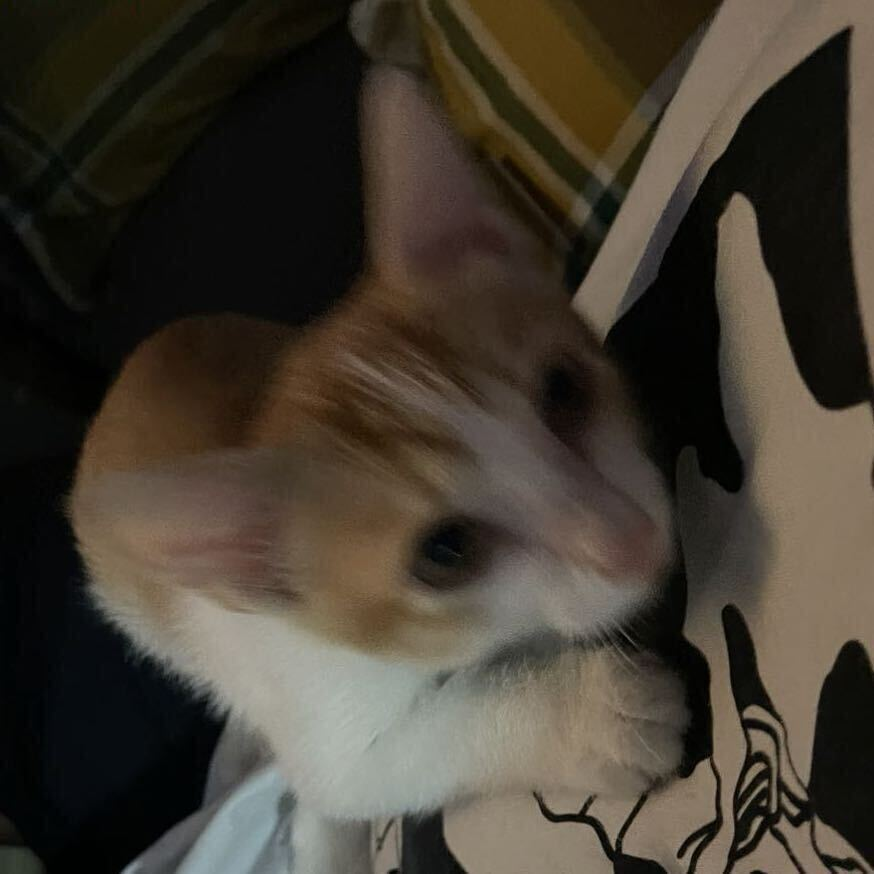
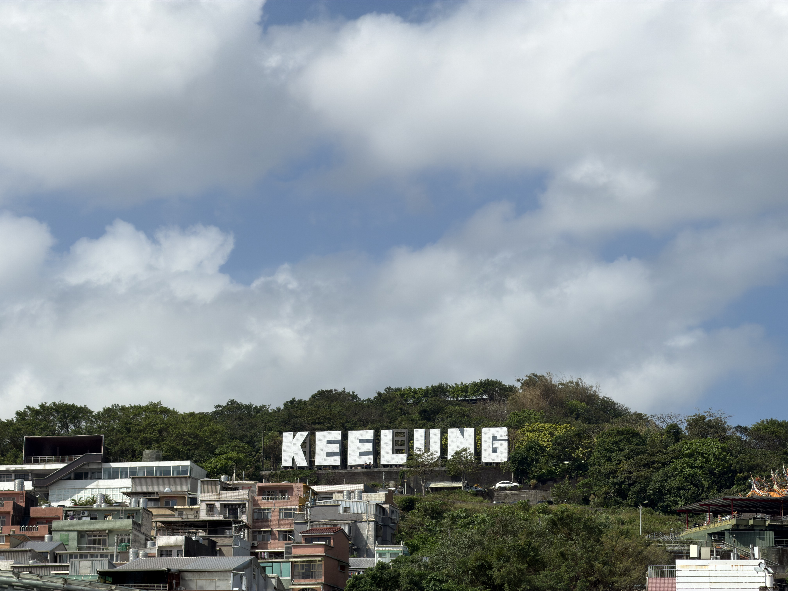
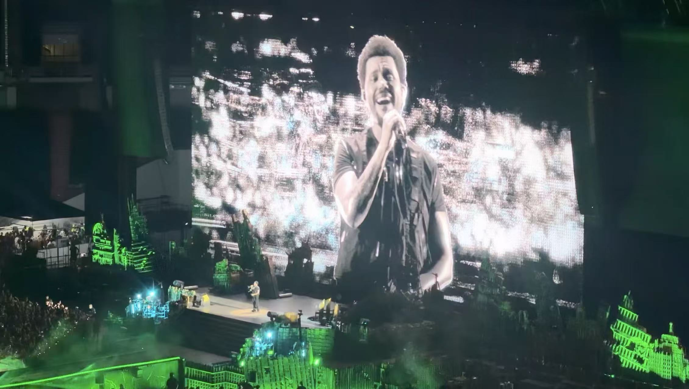
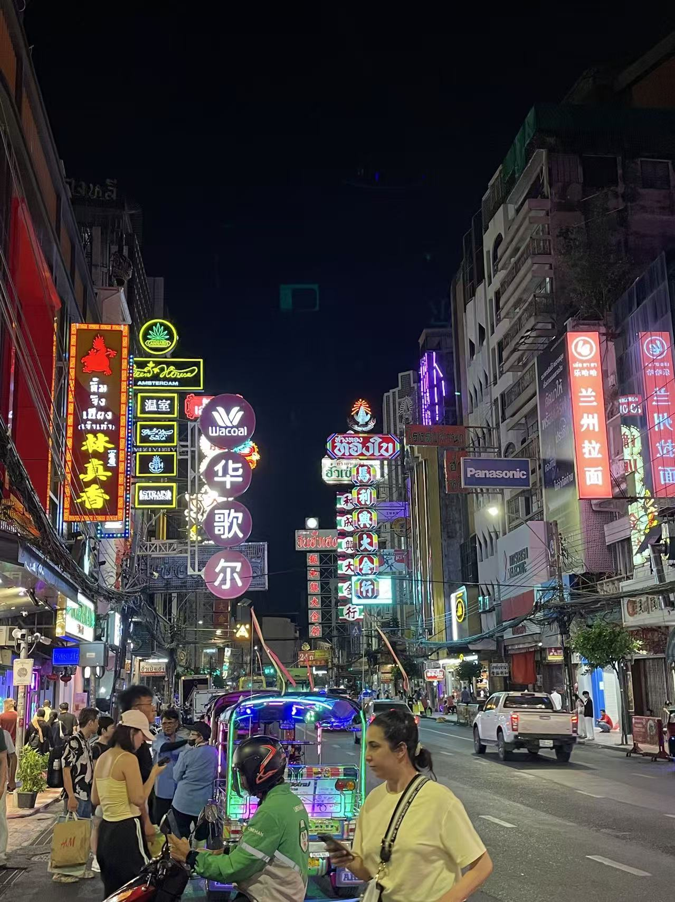
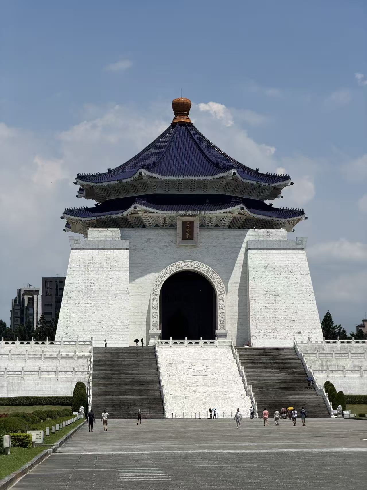

01 / ABOUT ME
Nice to meet you.
Hi, I'm Tian.
I'm a second-year Computer Science and Information Engineering student at National Taipei University of Technology (NTUT).
I'm an overseas Chinese student from Myanmar, now studying and exploring life in Taiwan.
Besides programming, I enjoy traveling, music, gaming, and fitness.

02 / MY INTERESTS
The things I love.
Hover over a card to learn more.
Travel
I enjoy exploring different cities, finding beautiful views, and making memories along the way.
Music
R&B is one of my favorite genres. The Weeknd's music is a big part of my playlist.
Gaming
Gaming is one of my favorite ways to relax, have fun, and spend time with friends.
Fitness
I enjoy strength training and working toward a healthier lifestyle.
03 / TRAVEL JOURNAL
Places I've explored.
Traveling is one of my favorite ways to spend my free time. I enjoy walking through different cities, trying local food, and discovering places I've never seen before.
Every trip has its own story. Sometimes it is an amazing view, and sometimes it is just a quiet street or a small cafe. I like taking pictures so I can look back on those memories.


Bangkok Concert


Memorial Hall
04 / MY SCHEDULE
My weekly class schedule.
NTUT · 115 學年度第 1 學期。課表僅列出課程名稱。
| 時間 | 星期一 | 星期二 | 星期三 | 星期四 | 星期五 |
|---|---|---|---|---|---|
| 08:10–09:00 | 資料結構 | 線性代數 | |||
| 09:10–10:00 | 資料結構 | 物件導向程式設計 | 資料結構 | 線性代數 | |
| 10:10–11:00 | 線性代數 | 計算機網路 | 物件導向程式設計 | ||
| 11:10–12:00 | 計算機網路 | 物件導向程式設計 | |||
| 12:10–13:00 | Lunch Break | ||||
| 13:10–14:00 | 基礎職場英文溝通（二） | 性別、科技與全球化 | 計算機組織 | ||
| 14:10–15:00 | 基礎職場英文溝通（二） | 體育 | 計算機網路 | 性別、科技與全球化 | 計算機組織 |
| 15:10–16:00 | 體育 | 網頁程式設計 | 病毒學概論 | ||
| 16:10–17:00 | 網頁程式設計 | 網頁程式設計 | 病毒學概論 | ||
| 17:10–18:00 | 計算機組織 | ||||
| After 18:00 | Free time — I choose what to do based on the day, such as going to the gym, self-study, or gaming. | ||||